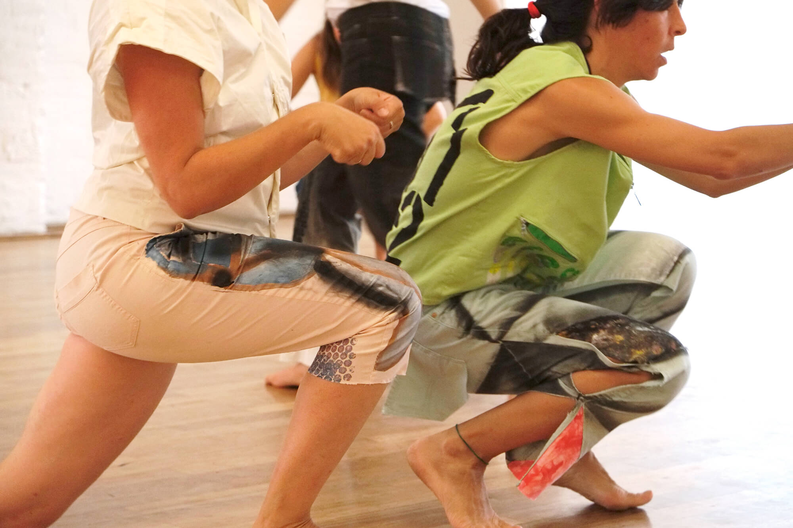

Ensembling 2019 
photo Alexander Wolff You’re watching. Dancing is listening, sensing is imagining.Time is thick, space is thick, we’re soaked in language. We’re not alone. Maps are overrated. Everything matters. A dance in companionship with six dancers and a reader. Six women dance, together and side by side. Another woman reads. Many other people sit, watch and listen. In this suspended time, a space of attention, commitment and autonomy spreads out. Listening closely to what is not always understood, paying attention to emerging singularities, relations and commonalities, deploying ticklish feelers, we grow interlaced strands that structure our ensemble.. Alice Chauchat's choreographic scores activate paradoxical relationships: distant intimacy, attentive autonomy, impersonal commitment. They stage dance as the borderland between perception and production (or sensation and expression), between a sense of self within a group and the dissolution of that self into the group. Ensembling is developed from two strands: “dancing as listening”, where listening is an expressive activity, and “non-formal unison”, which investigates our capacity to know what binds us without proof or measurement. Together they call forth an attention to relationships that evade systematization, instead nurturing endless differentiation. Choreography: Alice Chauchat Dance: Alice Martucci, Arantxa Martínez, Ewa Dziarnowska, Kai Evans, Julek Kreutzer, Alice Chauchat Reader: Siegmar Zacharias Light and room design: Bruno Pocheron, Elliot Blue Costumes: Alexander Wolff Assistante: Jennifer Lacey Production management: Micaela Kühn Jara Gefördert durch den Hauptstadtkulturfonds, in Kooperation mit Tanznacht-Forum im Rahmen von apap Performing Europe 2020, ko-finanziert durch das Creative Europe Programme der EU, mit Gastfreundschaft von HZT Berlin. |